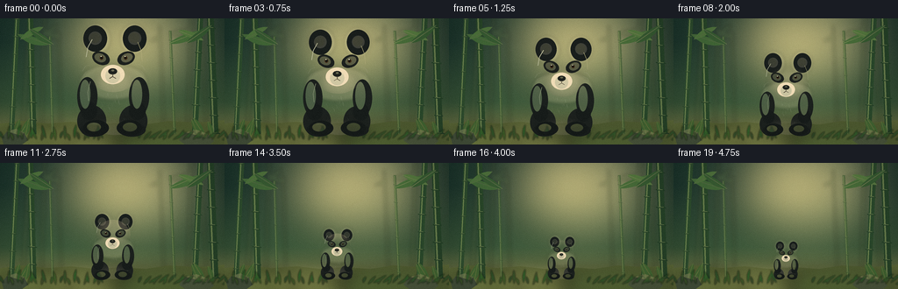
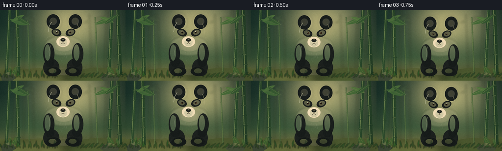

CODING AGENTS AS PIXEL WORLD MODELS
traex/DeepSeek-V4.1-Flash · instance_preservation_0046
点击播放 · 原生 RGB 像素
逐轮保存的候选
回放视频、检查图与代码变化。
每份候选均可单独播放。实际图片检查记录在下方工具轨迹中。
候选 01播放与检查图
点击播放 · 原生 RGB 像素


展开代码变化
--- 上一保存版本
+++ 本次保存版本
@@ -0,0 +1,752 @@
+from __future__ import annotations
+
+import math
+from pathlib import Path
+
+import cv2
+import numpy as np
+from PIL import Image, ImageChops, ImageDraw, ImageFilter
+
+import artifact_io
+
+
+WIDTH = 256
+HEIGHT = 144
+FRAME_COUNT = 20
+FPS = 4.0
+SS = 5
+HW = WIDTH * SS
+HH = HEIGHT * SS
+
+ROOT = Path(__file__).resolve().parent
+
+
+def rgba(color: tuple[int, int, int], alpha: int = 255) -> tuple[int, int, int, int]:
+ return color[0], color[1], color[2], alpha
+
+
+def mix(
+ a: tuple[int, int, int], b: tuple[int, int, int], t: float
+) -> tuple[int, int, int]:
+ return tuple(round(a[i] * (1.0 - t) + b[i] * t) for i in range(3))
+
+
+def scaled_box(box: tuple[float, float, float, float]) -> tuple[float, ...]:
+ return tuple(value * SS for value in box)
+
+
+def ellipse(draw: ImageDraw.ImageDraw, box: tuple[float, ...], **kwargs) -> None:
+ draw.ellipse(scaled_box(box), **kwargs)
+
+
+def polygon(draw: ImageDraw.ImageDraw, points: list[tuple[float, float]], **kwargs) -> None:
+ draw.polygon([(x * SS, y * SS) for x, y in points], **kwargs)
+
+
+def line(
+ draw: ImageDraw.ImageDraw,
+ points: list[tuple[float, float]],
+ width: float,
+ **kwargs,
+) -> None:
+ draw.line([(x * SS, y * SS) for x, y in points], width=round(width * SS), **kwargs)
+
+
+def cubic_bezier(
+ p0: tuple[float, float],
+ p1: tuple[float, float],
+ p2: tuple[float, float],
+ p3: tuple[float, float],
+ steps: int = 24,
+) -> list[tuple[float, float]]:
+ points = []
+ for index in range(1, steps + 1):
+ t = index / steps
+ u = 1.0 - t
+ points.append(
+ (
+ u**3 * p0[0]
+ + 3 * u**2 * t * p1[0]
+ + 3 * u * t**2 * p2[0]
+ + t**3 * p3[0],
+ u**3 * p0[1]
+ + 3 * u**2 * t * p1[1]
+ + 3 * u * t**2 * p2[1]
+ + t**3 * p3[1],
+ )
+ )
+ return points
+
+
+def body_outline() -> list[tuple[float, float]]:
+ points = [(128.0, 56.0)]
+ points += cubic_bezier((128, 56), (111, 57), (101, 70), (98, 89))
+ points += cubic_bezier((98, 89), (94, 109), (101, 127), (117, 131))
+ points += cubic_bezier((117, 131), (126, 134), (140, 134), (148, 130))
+ points += cubic_bezier((148, 130), (160, 123), (164, 105), (159, 89))
+ points += cubic_bezier((159, 89), (154, 70), (145, 57), (128, 56))
+ return points
+
+
+def rotated_ellipse(
+ draw: ImageDraw.ImageDraw,
+ center: tuple[float, float],
+ radii: tuple[float, float],
+ angle_deg: float,
+ **kwargs,
+) -> None:
+ angle = math.radians(angle_deg)
+ cos_a, sin_a = math.cos(angle), math.sin(angle)
+ points = []
+ for index in range(72):
+ theta = 2.0 * math.pi * index / 72
+ x = radii[0] * math.cos(theta)
+ y = radii[1] * math.sin(theta)
+ points.append(
+ (
+ (center[0] + x * cos_a - y * sin_a) * SS,
+ (center[1] + x * sin_a + y * cos_a) * SS,
+ )
+ )
+ draw.polygon(points, **kwargs)
+
+
+def leaf_points(
+ base: tuple[float, float],
+ length: float,
+ width: float,
+ angle_deg: float,
+ curl: float = 0.0,
+) -> list[tuple[float, float]]:
+ angle = math.radians(angle_deg)
+ cos_a, sin_a = math.cos(angle), math.sin(angle)
+ left = []
+ right = []
+ steps = 12
+ for index in range(steps + 1):
+ t = index / steps
+ along = length * t
+ taper = math.sin(math.pi * t) ** 0.72
+ offset = width * taper
+ bend = curl * math.sin(math.pi * t)
+ x0, y0 = along, bend - offset
+ x1, y1 = along, bend + offset
+ left.append(
+ (base[0] + x0 * cos_a - y0 * sin_a, base[1] + x0 * sin_a + y0 * cos_a)
+ )
+ right.append(
+ (base[0] + x1 * cos_a - y1 * sin_a, base[1] + x1 * sin_a + y1 * cos_a)
+ )
+ return left + right[::-1]
+
+
+def draw_leaf(
+ draw: ImageDraw.ImageDraw,
+ base: tuple[float, float],
+ length: float,
+ width: float,
+ angle: float,
+ color: tuple[int, int, int, int],
+ vein: tuple[int, int, int, int] | None = None,
+ curl: float = 0.0,
+) -> None:
+ polygon(draw, leaf_points(base, length, width, angle, curl), fill=color)
+ if vein is not None:
+ angle_rad = math.radians(angle)
+ tip = (
+ base[0] + math.cos(angle_rad) * length,
+ base[1] + math.sin(angle_rad) * length,
+ )
+ line(draw, [base, tip], 0.55, fill=vein)
+
+
+def draw_bamboo(
+ draw: ImageDraw.ImageDraw,
+ x_bottom: float,
+ x_top: float,
+ y_top: float,
+ y_bottom: float,
+ width: float,
+ base: tuple[int, int, int],
+ alpha: int,
+ node_spacing: float,
+) -> None:
+ line(
+ draw,
+ [(x_top, y_top), (x_bottom, y_bottom)],
+ width,
+ fill=rgba(mix(base, (18, 34, 24), 0.30), alpha),
+ )
+ line(
+ draw,
+ [(x_top - width * 0.18, y_top + 1.0), (x_bottom - width * 0.18, y_bottom)],
+ max(0.9, width * 0.23),
+ fill=rgba(mix(base, (206, 201, 127), 0.35), min(255, alpha + 15)),
+ )
+ y = y_top + node_spacing * 0.55
+ index = 0
+ while y < y_bottom:
+ t = (y - y_top) / max(1.0, y_bottom - y_top)
+ x = x_top * (1.0 - t) + x_bottom * t
+ half = width * (0.72 if index % 2 else 0.62)
+ line(
+ draw,
+ [(x - half, y - 0.45), (x + half, y + 0.45)],
+ max(0.8, width * 0.18),
+ fill=rgba(mix(base, (23, 40, 27), 0.48), alpha),
+ )
+ line(
+ draw,
+ [(x - half * 0.62, y - 1.0), (x + half * 0.50, y - 0.30)],
+ max(0.45, width * 0.08),
+ fill=rgba(mix(base, (228, 216, 144), 0.45), min(255, alpha + 20)),
+ )
+ y += node_spacing
+ index += 1
+
+
+def make_background() -> Image.Image:
+ yy, xx = np.mgrid[0:HH, 0:HW].astype(np.float32)
+ yn = yy / (HH - 1)
+ xn = xx / (HW - 1)
+
+ top = np.array([27, 55, 46], dtype=np.float32)
+ middle = np.array([77, 108, 65], dtype=np.float32)
+ bottom = np.array([153, 139, 83], dtype=np.float32)
+ lower = np.clip((yn - 0.18) / 0.82, 0.0, 1.0)
+ base = top[None, None, :] * (1.0 - lower[..., None])
+ base += middle[None, None, :] * lower[..., None]
+ ground_t = np.clip((yn - 0.66) / 0.34, 0.0, 1.0) ** 1.25
+ base = base * (1.0 - ground_t[..., None]) + bottom[None, None, :] * ground_t[..., None]
+
+ glow = np.exp(
+ -(
+ ((xn - 0.56) / 0.30) ** 2
+ + ((yn - 0.18) / 0.35) ** 2
+ )
+ )
+ glow = np.clip(glow * 0.66, 0.0, 1.0)
+ base = base * (1.0 - glow[..., None]) + np.array(
+ [226, 208, 135], dtype=np.float32
+ )[None, None, :] * glow[..., None]
+
+ side_shadow = np.clip(np.abs(xn - 0.5) * 1.65 - 0.20, 0.0, 1.0) ** 1.7
+ base *= (1.0 - 0.32 * side_shadow[..., None])
+ image = Image.fromarray(np.clip(base, 0, 255).astype(np.uint8), "RGB")
+
+ glow_layer = Image.new("RGBA", (HW, HH), (0, 0, 0, 0))
+ glow_draw = ImageDraw.Draw(glow_layer)
+ ellipse(
+ glow_draw,
+ (73, -38, 239, 102),
+ fill=(245, 226, 160, 54),
+ )
+ glow_layer = glow_layer.filter(ImageFilter.GaussianBlur(25 * SS))
+ image = Image.alpha_composite(image.convert("RGBA"), glow_layer)
+
+ distant = Image.new("RGBA", (HW, HH), (0, 0, 0, 0))
+ distant_draw = ImageDraw.Draw(distant)
+ for x_bottom, x_top, width, y_top in [
+ (26, 34, 4.2, 4),
+ (47, 51, 3.2, -8),
+ (70, 67, 2.6, 14),
+ (187, 182, 2.8, 8),
+ (214, 218, 3.8, -3),
+ (236, 229, 3.0, 9),
+ ]:
+ draw_bamboo(
+ distant_draw,
+ x_bottom,
+ x_top,
+ y_top,
+ 129,
+ width,
+ (104, 126, 75),
+ 72,
+ 17,
+ )
+ for base, length, width, angle, curl in [
+ ((47, 14), 24, 2.8, 18, 1.4),
+ ((51, 19), 20, 2.2, -36, -0.8),
+ ((218, 12), 26, 3.0, 166, -1.4),
+ ((214, 20), 18, 2.0, 199, 0.7),
+ ((185, 20), 16, 1.8, 158, -0.6),
+ ]:
+ draw_leaf(
+ distant_draw,
+ base,
+ length,
+ width,
+ angle,
+ (91, 119, 70, 64),
+ curl=curl,
+ )
+ distant = distant.filter(ImageFilter.GaussianBlur(2.1 * SS))
+ image = Image.alpha_composite(image, distant)
+
+ ground = Image.new("RGBA", (HW, HH), (0, 0, 0, 0))
+ ground_draw = ImageDraw.Draw(ground)
+ polygon(
+ ground_draw,
+ [
+ (0, 120),
+ (26, 117),
+ (54, 120),
+ (82, 118),
+ (108, 121),
+ (137, 119),
+ (166, 121),
+ (192, 117),
+ (225, 119),
+ (256, 116),
+ (256, 144),
+ (0, 144),
+ ],
+ fill=(89, 101, 54, 255),
+ )
+ for box, color, blur in [
+ ((2, 122, 81, 151), (124, 135, 70, 115), 7),
+ ((47, 116, 151, 146), (163, 157, 91, 78), 10),
+ ((130, 119, 254, 151), (70, 90, 46, 120), 8),
+ ]:
+ patch = Image.new("RGBA", (HW, HH), (0, 0, 0, 0))
+ patch_draw = ImageDraw.Draw(patch)
+ ellipse(patch_draw, box, fill=color)
+ patch = patch.filter(ImageFilter.GaussianBlur(blur * SS))
+ ground = Image.alpha_composite(ground, patch)
+ image = Image.alpha_composite(image, ground)
+
+ back = Image.new("RGBA", (HW, HH), (0, 0, 0, 0))
+ back_draw = ImageDraw.Draw(back)
+ for x_bottom, x_top, width, y_top, color, alpha in [
+ (13, 20, 5.5, -10, (55, 91, 52), 245),
+ (38, 34, 7.0, -15, (49, 84, 47), 245),
+ (60, 57, 3.0, 20, (83, 116, 62), 150),
+ (199, 194, 3.1, 14, (81, 115, 61), 160),
+ (222, 229, 6.5, -12, (50, 85, 48), 245),
+ (245, 239, 8.0, -20, (43, 76, 44), 250),
+ ]:
+ draw_bamboo(
+ back_draw,
+ x_bottom,
+ x_top,
+ y_top,
+ 132,
+ width,
+ color,
+ alpha,
+ 20,
+ )
+
+ for base, length, width, angle, color, curl in [
+ ((20, 18), 38, 4.2, 18, (66, 104, 54, 238), 1.4),
+ ((23, 24), 30, 3.4, -28, (79, 117, 59, 232), -1.0),
+ ((34, 12), 32, 3.6, 33, (55, 91, 49, 238), 1.2),
+ ((229, 14), 39, 4.1, 158, (68, 106, 54, 238), -1.2),
+ ((232, 25), 31, 3.5, 201, (82, 119, 60, 232), 0.8),
+ ((241, 8), 35, 3.8, 145, (52, 88, 47, 240), -1.0),
+ ]:
+ draw_leaf(
+ back_draw,
+ base,
+ length,
+ width,
+ angle,
+ color,
+ vein=(169, 175, 105, 90),
+ curl=curl,
+ )
+
+ for x, y, length, angle in [
+ (16, 133, 19, 289),
+ (22, 134, 23, 301),
+ (29, 134, 17, 281),
+ (226, 134, 20, 248),
+ (233, 134, 24, 238),
+ (242, 135, 18, 254),
+ ]:
+ draw_leaf(
+ back_draw,
+ (x, y),
+ length,
+ 2.7,
+ angle,
+ (63, 97, 48, 245),
+ vein=(136, 154, 82, 85),
+ curl=0.7,
+ )
+ image = Image.alpha_composite(image, back)
+
+ stones = Image.new("RGBA", (HW, HH), (0, 0, 0, 0))
+ stones_draw = ImageDraw.Draw(stones)
+ for points, fill, highlight in [
+ (
+ [(2, 136), (8, 129), (18, 126), (27, 130), (32, 139), (25, 144), (4, 144)],
+ (65, 77, 56, 255),
+ (126, 130, 88, 150),
+ ),
+ (
+ [(204, 139), (211, 130), (224, 127), (237, 132), (244, 140), (239, 144), (211, 144)],
+ (72, 83, 58, 255),
+ (137, 137, 91, 135),
+ ),
+ ]:
+ polygon(stones_draw, points, fill=fill)
+ polygon(
+ stones_draw,
+ [points[1], points[2], points[3], (points[3][0] - 2, points[3][1] + 4)],
+ fill=highlight,
+ )
+ image = Image.alpha_composite(image, stones)
+
+ foreground = Image.new("RGBA", (HW, HH), (0, 0, 0, 0))
+ foreground_draw = ImageDraw.Draw(foreground)
+ for index in range(22):
+ x = 4 + index * 5.4
+ y = 137 + (index % 3) * 1.2
+ length = 9 + (index * 7) % 14
+ angle = -116 + (index * 31) % 54
+ draw_leaf(
+ foreground_draw,
+ (x, y),
+ length,
+ 1.45,
+ angle,
+ (40 + (index % 3) * 9, 72 + (index % 4) * 7, 38, 225),
+ curl=(index % 3 - 1) * 0.6,
+ )
+ for index in range(18):
+ x = 158 + index * 5.6
+ y = 137 + (index % 2) * 1.6
+ length = 8 + (index * 5) % 12
+ angle = -64 + (index * 17) % 42
+ draw_leaf(
+ foreground_draw,
+ (x, y),
+ length,
+ 1.35,
+ angle,
+ (42 + (index % 2) * 8, 75 + (index % 3) * 6, 39, 215),
+ curl=(index % 3 - 1) * 0.5,
+ )
+ foreground = foreground.filter(ImageFilter.GaussianBlur(0.75 * SS))
+ image = Image.alpha_composite(image, foreground)
+ return image.convert("RGB")
+
+
+def add_masked_layer(
+ target: Image.Image,
+ mask: Image.Image,
+ shape: str,
+ box: tuple[float, float, float, float],
+ color: tuple[int, int, int, int],
+ blur: float,
+) -> Image.Image:
+ layer = Image.new("RGBA", (HW, HH), (0, 0, 0, 0))
+ draw = ImageDraw.Draw(layer)
+ if shape == "ellipse":
+ ellipse(draw, box, fill=color)
+ else:
+ polygon(draw, [(box[0], box[1]), (box[2], box[1]), (box[2], box[3]), (box[0], box[3])], fill=color)
+ layer = layer.filter(ImageFilter.GaussianBlur(blur * SS))
+ return Image.composite(layer, target, mask)
+
+
+def draw_panda(scale: float, frame_index: int) -> Image.Image:
+ layer = Image.new("RGBA", (HW, HH), (0, 0, 0, 0))
+ cx, ground = 128.0, 132.0
+
+ def tx(x: float) -> float:
+ return (cx + (x - cx) * scale) * SS
+
+ def ty(y: float) -> float:
+ return (ground + (y - ground) * scale) * SS
+
+ def txy(points: list[tuple[float, float]]) -> list[tuple[float, float]]:
+ return [(tx(x), ty(y)) for x, y in points]
+
+ def tellipse(box: tuple[float, float, float, float], **kwargs) -> None:
+ layer_draw.ellipse(
+ (tx(box[0]), ty(box[1]), tx(box[2]), ty(box[3])),
+ **kwargs,
+ )
+
+ def tline(points: list[tuple[float, float]], width: float, **kwargs) -> None:
+ layer_draw.line(txy(points), width=max(1, round(width * SS * scale)), **kwargs)
+
+ def trotated(
+ center: tuple[float, float],
+ radii: tuple[float, float],
+ angle: float,
+ **kwargs,
+ ) -> None:
+ angle_rad = math.radians(angle)
+ cos_a, sin_a = math.cos(angle_rad), math.sin(angle_rad)
+ points = []
+ for index in range(64):
+ theta = 2.0 * math.pi * index / 64
+ x = radii[0] * math.cos(theta)
+ y = radii[1] * math.sin(theta)
+ points.append(
+ (
+ tx(center[0] + x * cos_a - y * sin_a),
+ ty(center[1] + x * sin_a + y * cos_a),
+ )
+ )
+ layer_draw.polygon(points, **kwargs)
+
+ layer_draw = ImageDraw.Draw(layer)
+
+ # Soft rim behind the ears separates the dark silhouette from the forest.
+ rim = Image.new("RGBA", (HW, HH), (0, 0, 0, 0))
+ rim_draw = ImageDraw.Draw(rim)
+ for box in [(96, 8, 124, 39), (139, 8, 166, 39), (93, 54, 166, 91)]:
+ rim_draw.ellipse(
+ (tx(box[0]) - 2 * SS, ty(box[1]) - 2 * SS, tx(box[2]) + 2 * SS, ty(box[3]) + 2 * SS),
+ fill=(232, 221, 173, 48),
+ )
+ rim = rim.filter(ImageFilter.GaussianBlur(1.7 * SS))
+ layer = Image.alpha_composite(layer, rim)
+ layer_draw = ImageDraw.Draw(layer)
+
+ # Ears and inner ears.
+ for box, inner in [
+ ((95, 8, 122, 38), (101, 15, 116, 30)),
+ ((140, 8, 167, 38), (146, 15, 161, 30)),
+ ]:
+ tellipse(box, fill=(25, 30, 28, 255))
+ tellipse(inner, fill=(63, 65, 57, 255))
+ tellipse(
+ (inner[0] + 1, inner[1] + 1, inner[2] - 2, inner[3] - 2),
+ fill=(42, 45, 40, 210),
+ )
+
+ # Black seated legs sit behind the pale body.
+ tellipse((88, 99, 121, 135), fill=(28, 33, 30, 255))
+ tellipse((136, 99, 168, 135), fill=(28, 33, 30, 255))
+ tellipse((92, 119, 122, 135), fill=(24, 29, 27, 255))
+ tellipse((135, 119, 166, 135), fill=(24, 29, 27, 255))
+
+ body_points = body_outline()
+ body_mask = Image.new("L", (HW, HH), 0)
+ body_mask_draw = ImageDraw.Draw(body_mask)
+ body_mask_draw.polygon(txy(body_points), fill=255)
+
+ body_base = Image.new("RGBA", (HW, HH), (0, 0, 0, 0))
+ body_base_draw = ImageDraw.Draw(body_base)
+ body_base_draw.polygon(txy(body_points), fill=(238, 233, 214, 255))
+ body_base = add_masked_layer(
+ body_base,
+ body_mask,
+ "ellipse",
+ (142, 66, 185, 139),
+ (119, 122, 108, 88),
+ 7,
+ )
+ body_base = add_masked_layer(
+ body_base,
+ body_mask,
+ "ellipse",
+ (82, 50, 125, 109),
+ (255, 248, 220, 96),
+ 6,
+ )
+ body_base = add_masked_layer(
+ body_base,
+ body_mask,
+ "ellipse",
+ (100, 116, 157, 146),
+ (127, 122, 103, 76),
+ 5,
+ )
+ layer = Image.alpha_composite(layer, body_base)
+ layer_draw = ImageDraw.Draw(layer)
+
+ # Fur texture, clipped to the torso.
+ fur = Image.new("RGBA", (HW, HH), (0, 0, 0, 0))
+ fur_draw = ImageDraw.Draw(fur)
+ rng = np.random.default_rng(46)
+ for _ in range(34):
+ x = rng.uniform(101, 156)
+ y = rng.uniform(65, 128)
+ length = rng.uniform(2.0, 5.2)
+ tone = int(rng.integers(0, 2))
+ color = (150, 149, 132, 38) if tone else (255, 252, 235, 36)
+ fur_draw.line(
+ [(tx(x), ty(y)), (tx(x + length * 0.22), ty(y + length))],
+ width=max(1, round(0.48 * SS * scale)),
+ fill=color,
+ )
+ fur = Image.composite(fur, Image.new("RGBA", (HW, HH), (0, 0, 0, 0)), body_mask)
+ layer = Image.alpha_composite(layer, fur)
+ layer_draw = ImageDraw.Draw(layer)
+
+ # Arms and paws overlap the torso.
+ tellipse((88, 67, 111, 111), fill=(27, 32, 29, 255))
+ tellipse((147, 67, 170, 111), fill=(27, 32, 29, 255))
+ tellipse((92, 95, 111, 116), fill=(23, 28, 26, 255))
+ tellipse((147, 95, 166, 116), fill=(23, 28, 26, 255))
+ for box, glow in [
+ ((91, 70, 103, 103), (86, 94, 80, 95)),
+ ((150, 70, 162, 103), (77, 85, 74, 75)),
+ ]:
+ tellipse(box, fill=glow)
+
+ # Front feet.
+ tellipse((95, 116, 124, 134), fill=(21, 26, 24, 255))
+ tellipse((133, 116, 162, 134), fill=(21, 26, 24, 255))
+ for box in [(99, 119, 115, 129), (140, 119, 156, 129)]:
+ tellipse(box, fill=(55, 59, 51, 105))
+
+ # Head with warm lower-face light and cool upper shade.
+ head_box = (96, 19, 163, 84)
+ head_mask = Image.new("L", (HW, HH), 0)
+ head_mask_draw = ImageDraw.Draw(head_mask)
+ head_mask_draw.ellipse(
+ (tx(head_box[0]), ty(head_box[1]), tx(head_box[2]), ty(head_box[3])),
+ fill=255,
+ )
+ head_base = Image.new("RGBA", (HW, HH), (0, 0, 0, 0))
+ head_base_draw = ImageDraw.Draw(head_base)
+ head_base_draw.ellipse(
+ (tx(head_box[0]), ty(head_box[1]), tx(head_box[2]), ty(head_box[3])),
+ fill=(242, 237, 219, 255),
+ )
+ head_base = add_masked_layer(
+ head_base,
+ head_mask,
+ "ellipse",
+ (137, 25, 177, 92),
+ (134, 135, 120, 72),
+ 6,
+ )
+ head_base = add_masked_layer(
+ head_base,
+ head_mask,
+ "ellipse",
+ (86, 15, 132, 69),
+ (255, 249, 225, 86),
+ 5,
+ )
+ head_base = add_masked_layer(
+ head_base,
+ head_mask,
+ "ellipse",
+ (108, 57, 153, 92),
+ (233, 209, 166, 55),
+ 5,
+ )
+ layer = Image.alpha_composite(layer, head_base)
+ layer_draw = ImageDraw.Draw(layer)
+
+ # Eye masks tilt gently toward the muzzle.
+ trotated((115.2, 45.5), (10.3, 7.4), 23, fill=(28, 32, 29, 255))
+ trotated((143.8, 45.5), (10.3, 7.4), -23, fill=(28, 32, 29, 255))
+ trotated((114.3, 45.0), (6.8, 4.9), 23, fill=(44, 46, 40, 145))
+ trotated((144.7, 45.0), (6.8, 4.9), -23, fill=(44, 46, 40, 145))
+
+ # Small amber eyes and highlights keep the face readable after shrinking.
+ for eye_x in (115.8, 143.2):
+ tellipse((eye_x - 2.1, 43.1, eye_x + 2.1, 47.3), fill=(66, 45, 25, 255))
+ tellipse((eye_x - 1.25, 43.8, eye_x + 1.2, 46.3), fill=(16, 18, 16, 255))
+ tellipse((eye_x - 1.05, 42.8, eye_x + 0.05, 43.9), fill=(255, 250, 221, 245))
+
+ # Muzzle, nose and mouth.
+ tellipse((115, 53, 142, 75), fill=(240, 220, 182, 255))
+ tellipse((120, 57, 137, 74), fill=(249, 232, 197, 180))
+ trotated((128.5, 60.5), (5.1, 3.5), 0, fill=(31, 34, 30, 255))
+ tellipse((126.8, 58.4, 130.3, 60.4), fill=(89, 86, 74, 155))
+ tline([(128.5, 63.5), (128.5, 66.5)], 0.75, fill=(71, 61, 48, 230))
+ tline([(128.5, 66.4), (124.8, 68.6)], 0.72, fill=(71, 61, 48, 220))
+ tline([(128.5, 66.4), (132.1, 68.5)], 0.72, fill=(71, 61, 48, 220))
+
+ # Cheek fur strokes.
+ for points in [
+ [(102, 53), (97, 55), (94, 60)],
+ [(103, 59), (98, 61), (95, 65)],
+ [(157, 52), (162, 54), (165, 59)],
+ [(156, 58), (161, 60), (164, 64)],
+ ]:
+ tline(points, 0.48, fill=(182, 178, 157, 70))
+
+ # Cool rim light on the left edge and warm edge light on the right.
+ tline([(105, 24), (100, 33), (98, 44)], 0.8, fill=(255, 251, 228, 115))
+ tline([(103, 72), (100, 84), (101, 94)], 0.65, fill=(255, 247, 218, 80))
+ tline([(157, 27), (161, 37), (162, 49)], 0.58, fill=(216, 198, 151, 65))
+
+ # A tiny breathing beat adds life without disturbing the monotonic shrink.
+ return layer
+
+
+def make_shadow(scale: float) -> Image.Image:
+ layer = Image.new("RGBA", (HW, HH), (0, 0, 0, 0))
+ draw = ImageDraw.Draw(layer)
+ rx = 46.0 * scale
+ ry = 7.5 * math.sqrt(scale)
+ alpha = round(72 * (0.58 + 0.42 * scale))
+ ellipse(
+ draw,
+ (128 - rx, 132 - ry, 128 + rx, 132 + ry),
+ fill=(20, 28, 21, alpha),
+ )
+ return layer.filter(ImageFilter.GaussianBlur(4.8 * SS))
+
+
+def finish_frame(image: Image.Image, frame_index: int) -> np.ndarray:
+ frame = image.resize((WIDTH, HEIGHT), Image.Resampling.LANCZOS)
+ array = np.asarray(frame, dtype=np.float32)
+
+ yy, xx = np.mgrid[0:HEIGHT, 0:WIDTH].astype(np.float32)
+ nx = (xx - (WIDTH - 1) * 0.5) / ((WIDTH - 1) * 0.5)
+ ny = (yy - (HEIGHT - 1) * 0.5) / ((HEIGHT - 1) * 0.5)
+ radius = np.sqrt(nx * nx * 0.72 + ny * ny)
+ vignette = 1.0 - 0.105 * np.clip(radius - 0.40, 0.0, 1.0) ** 1.4
+ array *= vignette[..., None]
+
+ rng = np.random.default_rng(8100 + frame_index)
+ grain = rng.normal(0.0, 1.05, (HEIGHT, WIDTH, 1)).astype(np.float32)
+ array += grain
+ return np.clip(array, 0, 255).astype(np.uint8)
+
+
+def encode_mp4(frames: np.ndarray, path: Path) -> None:
+ writer = cv2.VideoWriter(
+ str(path),
+ cv2.VideoWriter_fourcc(*"mp4v"),
+ FPS,
+ (WIDTH, HEIGHT),
+ )
+ if not writer.isOpened():
+ raise RuntimeError("Could not open MP4 writer")
+ for frame in frames:
+ writer.write(cv2.cvtColor(frame, cv2.COLOR_RGB2BGR))
+ writer.release()
+
+
+def main() -> None:
+ background = make_background()
+ frames = []
+
+ for index in range(FRAME_COUNT):
+ t = index / (FRAME_COUNT - 1)
+ eased = t * t * (3.0 - 2.0 * t)
+ scale = 1.0 - 0.66 * eased
+ breathing = 1.0 + 0.0045 * math.sin(2.0 * math.pi * index / 10.0)
+ render_scale = scale * breathing
+
+ image = Image.alpha_composite(background.convert("RGBA"), make_shadow(render_scale))
+ image = Image.alpha_composite(image, draw_panda(render_scale, index))
+ frames.append(finish_frame(image.convert("RGB"), index))
+
+ frames_array = np.stack(frames, axis=0)
+ artifact_io.save(frames_array, ROOT)
+ encode_mp4(frames_array, ROOT / "panda_shrinks.mp4")
+
+ print(
+ f"Wrote {len(frames)} frames at {WIDTH}x{HEIGHT}, {FPS:g} fps; "
+ f"scale {1.0:.3f} -> {1.0 - 0.66:.3f}"
+ )
+
+
+if __name__ == "__main__":
+ main()
可观测工具轨迹
实际执行的命令与返回图片。
命令 1exit 0
/bin/bash -c "pwd && rg --files -g '"'!node_modules'"' -g '"'!.git'"' | sed -n '1,160p'"
命令 2exit 0
/bin/bash -c 'cat GENERATION_RULES.md'
命令 3exit 0
/bin/bash -c "cat prompt.txt && printf '\\n--- task_spec ---\\n' && cat task_spec.json"
命令 4exit 0
/bin/bash -c "find . -maxdepth 2 -type f -printf '%p %s bytes\\n' | sort | sed -n '1,200p'"
命令 5exit 0
/bin/bash -c "sed -n '1,240p' artifact_io.py"
命令 6exit 0
/bin/bash -c "sed -n '1,240p' player_template.html"
命令 7exit 0
/bin/bash -c "python3 - <<'PY' import importlib.util for m in ['numpy','PIL','cv2','imageio','matplotlib','scipy','cairo','pygame']: print(m, bool(importlib.util.find_spec(m))) PY"
命令 8exit 0
/bin/bash -c "command -v ffmpeg || true; command -v ffprobe || true; python3 - <<'PY'
from PIL import Image
print('Pillow', Image.__version__)
PY"命令 9exit 0
/bin/bash -c "python3 - <<'PY' import cv2 print(cv2.__version__) PY"
命令 10exit 0
/bin/bash -c 'python3 generate.py'
命令 11exit 0
/bin/bash -c "ls -lh frames inspection.png transition_check.png pixels.npz index.html panda_shrinks.mp4 && python3 - <<'PY' from PIL import Image import numpy as np for p in ['inspection.png','frames/00.png','frames/19.png']: im=Image.open(p) a=np.asarray(im) print(p, im.size, a.min(), a.max(), a.mean(axis=(0,1)).round(2)) PY"
命令 12exit 0
/bin/bash -c "python3 - <<'PY'
from PIL import Image
im=Image.open('inspection.png')
im.resize((1536,495), Image.Resampling.NEAREST).save('.tmp/inspection_large.png')
PY"命令 13exit 0
/bin/bash -c "python3 - <<'PY' import generate from PIL import Image import numpy as np for i,s in [(0,1.0),(9,.73),(19,.34)]: im=generate.draw_panda(s,i) a=np.asarray(im) m=a[:,:,3]>100 ys,xs=np.where(m) print(i, 'bbox', (xs.min()//5,ys.min()//5,xs.max()//5,ys.max()//5), 'pixels', m.sum()//25) crop=m[ys.min():ys.max()+1,xs.min():xs.max()+1] h,w=crop.shape for yy in range(0,h,max(1,h//28)): row='' for xx in range(0,w,max(1,w//42)): block=crop[yy:min(h,yy+max(1,h//28)),xx:min(w,xx+max(1,w//42))] row += '#' if block.mean()>.55 else '+' if block.mean()>.2 else ' ' print(row.rstrip()) print() PY"
命令 14exit 0
/bin/bash -c 'command -v chafa || true; command -v viu || true; command -v jp2 || true; command -v img2txt || true; command -v timg || true'
命令 15exit 0
/bin/bash -c "python3 - <<'PY'
from PIL import Image
import numpy as np
im=np.asarray(Image.open('frames/00.png')).astype(float)
# 8x8 color tile overview, ANSI truecolor blocks
h,w,_=im.shape
for y in range(0,h,8):
row=[]
for x in range(0,w,8):
c=im[y:min(h,y+8),x:min(w,x+8)].mean((0,1)).astype(int)
row.append(f'\\x1b[48;2;{c[0]};{c[1]};{c[2]}m ')
print(''.join(row)+'\\x1b[0m')
PY"命令 16exit 0
/bin/bash -c "python3 - <<'PY'
from PIL import Image
import numpy as np
for fi in [0,9,19]:
im=np.asarray(Image.open(f'frames/{fi:02d}.png')).astype(float)
h,w,_=im.shape
print('FRAME',fi)
for y in range(0,h,4):
row=[]
for x in range(0,w,4):
c=im[y:min(h,y+4),x:min(w,x+4)].mean((0,1)).astype(int)
row.append(f'\\x1b[48;2;{c[0]};{c[1]};{c[2]}m ')
print(''.join(row)+'\\x1b[0m')
PY"命令 17exit 0
/bin/bash -c "python3 - <<'PY'
from PIL import Image
import numpy as np
for fi in [0,9,19]:
im=np.asarray(Image.open(f'frames/{fi:02d}.png')).astype(float)
h,w,_=im.shape
print('FRAME',fi)
for y in range(0,h,4):
row=[]
for x in range(0,w,4):
c=im[y:min(h,y+4),x:min(w,x+4)].mean((0,1)).astype(int)
row.append(f'\\x1b[48;2;{c[0]};{c[1]};{c[2]}m ')
print(''.join(row)+'\\x1b[0m')
PY"命令 18exit 0
/bin/bash -c "python3 - <<'PY'
from PIL import Image
import numpy as np
chars=' .:-=+*#%@'
for fi in [0,9,19]:
a=np.asarray(Image.open(f'frames/{fi:02d}.png')).astype(float)
# contrast relative to local background via dark/light deviation from blurred image
import cv2
blur=cv2.GaussianBlur(a.astype(np.uint8),(0,0),8).astype(float)
d=(a-blur).mean(2)
print('\\nFRAME',fi)
for y in range(4,142,3):
row=''
for x in range(88,170,2):
v=d[y:y+3,x:x+2].mean()
# dark=black panda, light=white panda
if v < -35: c='#'
elif v < -18: c='O'
elif v > 45: c='@'
elif v > 22: c='+'
elif v > 10: c='.'
else: c=' '
row+=c
print(row.rstrip())
PY"命令 19exit 0
/bin/bash -c "python3 - <<'PY'
from PIL import Image
import numpy as np
for fi in [0,9,19]:
a=np.asarray(Image.open(f'frames/{fi:02d}.png')).astype(float)
# save nearest enlarged center crop for potential visual audit
Image.fromarray(a.astype('uint8')).crop((80,0,176,144)).resize((384,576),Image.Resampling.NEAREST).save(f'.tmp/center_{fi:02d}.png')
PY"命令 20exit 0
/bin/bash -c "python3 - <<'PY'
from PIL import Image
import numpy as np
for fi in [0,9,19]:
a=np.asarray(Image.open(f'frames/{fi:02d}.png')).astype(float)
print('\\nFRAME',fi)
# print sampled luminance/saturation center, preserve actual color names
for y in range(4,144,4):
row=''
for x in range(88,168,2):
p=a[y:y+4,x:x+2].mean((0,1))
r,g,b=p
if r<60 and g<65 and b<60: c='#'
elif r>185 and g>175 and b>145: c='W'
elif r<110 and g<75 and b<60: c='N'
elif g>r*1.15 and g>b*1.2: c='g'
elif r>g*1.25 and g>b*1.15: c='y'
elif r<120 and g<130 and b<100: c='d'
else: c='.'
row+=c
print(row.rstrip())
PY"命令 21exit 0
/bin/bash -c "python3 - <<'PY'
from pathlib import Path
import json
import numpy as np
import cv2
from PIL import Image
import generate
root=Path('.')
spec=json.loads((root/'task_spec.json').read_text())
npz=np.load(root/'pixels.npz')['pixels']
print('npz', npz.shape, npz.dtype, 'spec', spec)
frames=[]
for i in range(20):
im=np.asarray(Image.open(root/'frames'/f'{i:02d}.png').convert('RGB'))
assert im.shape==(144,256,3) and im.dtype==np.uint8
frames.append(im)
frames=np.stack(frames)
assert np.array_equal(npz, (frames[:,:, :, 0].astype(np.uint32)<<16 | frames[:,:, :, 1].astype(np.uint32)<<8 | frames[:,:, :, 2]).transpose(1,2,0))
cap=cv2.VideoCapture(str(root/'panda_shrinks.mp4'))
print('mp4 opened',cap.isOpened(),'frames',int(cap.get(cv2.CAP_PROP_FRAME_COUNT)),'fps',cap.get(cv2.CAP_PROP_FPS),'size',int(cap.get(cv2.CAP_PROP_FRAME_WIDTH)),int(cap.get(cv2.CAP_PROP_FRAME_HEIGHT)))
cap.release()
# Estimate central panda coverage using frame 0 background and per-frame center contrast.
# Report expected semantic area from vector alpha instead, plus adjacent-frame MAD.
for i in [0,5,10,15,19]:
mask=np.asarray(generate.draw_panda(1.0-0.66*(i/19)**2*(3-2*i/19),i))[:,:,3]
ys,xs=np.where(mask>96)
print(f'frame {i:02d}: panda bbox x={xs.min()//5}-{xs.max()//5} y={ys.min()//5}-{ys.max()//5}')
mads=np.abs(np.diff(frames.astype(np.int16),axis=0)).mean(axis=(1,2,3))
print('adjacent MAD min/mean/max', round(float(mads.min()),2), round(float(mads.mean()),2), round(float(mads.max()),2))
print('html bytes', (root/'index.html').stat().st_size, 'ready marker', 'window.__pixelReady=true' in (root/'index.html').read_text())
PY"命令 22exit 0
/bin/bash -c "git status --short 2>/dev/null || true; python3 -m py_compile generate.py; find frames -maxdepth 1 -type f -name '*.png' | wc -l"
命令 23exit 0
/bin/bash -c 'du -sh .; ls -lh generate.py task_spec.json prompt.txt GENERATION_RULES.md panda_shrinks.mp4 pixels.npz inspection.png transition_check.png index.html'
命令 24exit 0
/bin/bash -c "python3 - <<'PY'
from PIL import Image
import numpy as np
ims=[np.asarray(Image.open(f'frames/{i:02d}.png')).astype(float) for i in range(20)]
# central background stability outside panda, and actual scale estimate from panda mask.
for i in [0,1,5,10,15,19]:
if i==0: continue
diff=np.abs(ims[i]-ims[0]).mean(2)
print(i,'center change',round(float(diff[20:125,90:166].mean()),2),'edge change',round(float(diff[:50,:80].mean()),2))
PY"命令 25exit 0
/bin/bash -c "python3 - <<'PY'
import generate
from PIL import Image, ImageChops
import numpy as np
# Validate frame 0 to final uses same vector proportions by normalizing masks.
for i in [0,19]:
s=1-.66*(i/19)**2*(3-2*i/19)
m=np.asarray(generate.draw_panda(s,i))[:,:,3]
ys,xs=np.where(m>96)
box=(xs.min(),ys.min(),xs.max()+1,ys.max()+1)
norm=np.asarray(Image.fromarray((m[ys.min():ys.max()+1,xs.min():xs.max()+1]>96).astype('uint8')*255).resize((100,100),Image.Resampling.BILINEAR))>100
if i==0: a=norm
else:
inter=(a&norm).sum(); union=(a|norm).sum()
print('normalized silhouette IoU first/final',round(inter/union,4))
PY"保存候选 1 份；完成命令 25 次；可验证图片返回 0 张。原始 API 响应与完整日志保留在本地。